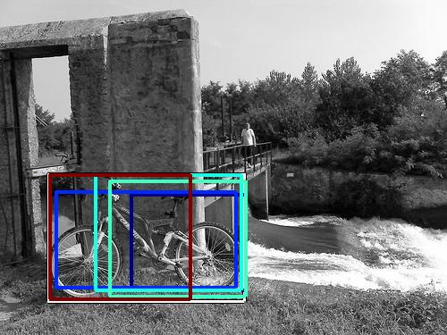

0.395825

0.505495

0.514532

0.521286

0.538862

0.553026

0.565576

0.614287

0.619735

0.637274
| Target image | 0.395825 | 0.505495 | 0.514532 | 0.521286 | 0.538862 | 0.553026 | 0.565576 | 0.614287 | 0.619735 | 0.637274 |
Target image |  32453.564453 |  24982.074219 |  14282.035156 |  14177.373047 |  12686.018555 |  12546.593750 |  10520.301758 |  9293.589844 |  8867.773438 |  8243.990234 |
Target image |  26723.566406 |  20475.781250 |  16387.101562 |  15999.286133 |  15415.738281 |  11759.846680 |  11357.445312 |  10464.527344 |  9245.999023 |  8933.077148 |
Target image |  26653.906250 |  25711.994141 |  20660.167969 |  17750.927734 |  15986.062500 |  14870.952148 |  14340.345703 |  12879.421875 |  11097.849609 |  9809.661133 |
Target image |  17009.101562 |  13713.055664 |  12214.640625 |  12103.379883 |  11927.233398 |  11360.935547 |  11046.369141 |  11021.357422 |  9484.562500 |  8188.135254 |